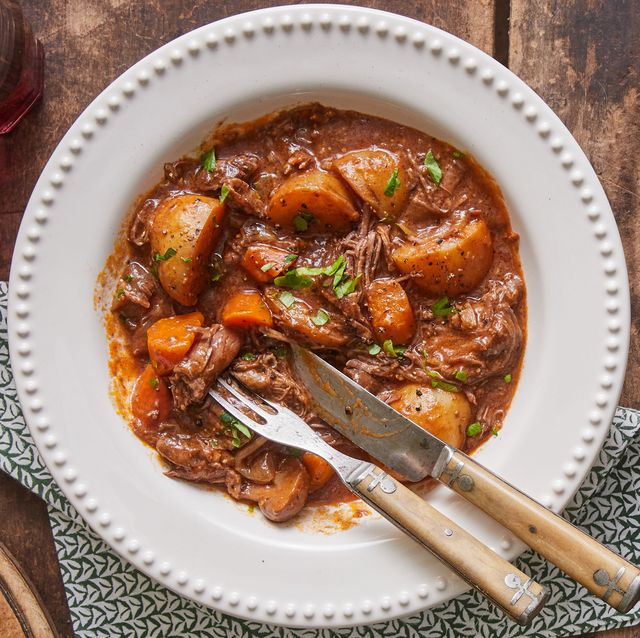

Ingredients:
Beef stew meat, cubed Assorted vegetables (carrots, potatoes, onions, etc.) Beef broth Tomato paste Garlic, minced Fresh or dried herbs (thyme, rosemary, bay leaves) Salt and pepper to taste Olive oil for searing
Instructions:
In a pot, heat olive oil and sear the beef until browned on all sides. Add minced garlic and cook until fragrant. Stir in tomato paste and cook for a couple of minutes. Pour in beef broth, adding fresh or dried herbs, salt, and pepper. Add assorted vegetables and bring the stew to a simmer. Simmer until the beef is tender and the flavors meld. Adjust seasoning if needed, and serve hot.
Beef Stew
Author
Warm up with a hearty bowl of homemade beef stew using this straightforward recipe. Packed with tender beef chunks, hearty vegetables, and savory broth, this comforting dish is perfect for chilly days. Settle in for a satisfying meal with the rich flavors and aromas of a classic beef stew.
Beef stew meat, cubed Assorted vegetables (carrots, potatoes, onions, etc.) Beef broth Tomato paste Garlic, minced Fresh or dried herbs (thyme, rosemary, bay leaves) Salt and pepper to taste Olive oil for searing
Instructions:
In a pot, heat olive oil and sear the beef until browned on all sides. Add minced garlic and cook until fragrant. Stir in tomato paste and cook for a couple of minutes. Pour in beef broth, adding fresh or dried herbs, salt, and pepper. Add assorted vegetables and bring the stew to a simmer. Simmer until the beef is tender and the flavors meld. Adjust seasoning if needed, and serve hot.